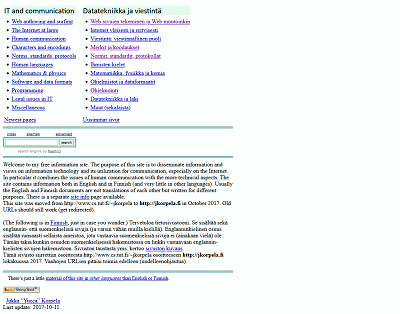
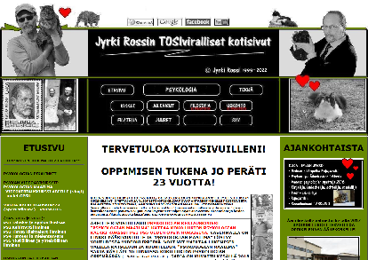
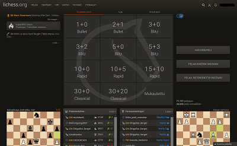
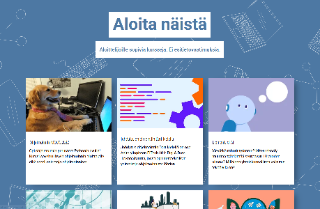

Suosikkinettisivuja
Julkaistu 24.4.2022
Tämä artikkeli on melko perinteinen kokoelma linkkejä sivuihin, joita soisin lukijoideni tuntevan. Kirjoitan pienet esittelyt sivuille. Kun lista kasvaa, saatan järjestellä linkkejä jotenkin.
- https://jkorpela.fi
 Jukka "Yucca" Korpelan kotisivut, joissa käsitellään muunmuassa webbiä, ohjelmointia, kieliä, viestintää ja luonnontieteitä. Osa tietotekniikkaan liittyvästä tiedosta on hieman vanhahtavaa (sivut ovat hyvin vanhat), mutta hyvin selitettyä mukavalla suomenkiellä. Tämä on (tietääkseni) ainoa paikka, josta ladata Windowsille Suomalainen monikielinen näppäimistö (SFS 5966). Erittäin tyylikkäät sivut. - https://jyrkirossi.fi
 Jyrki Rossin kotisivut. Jyrki on Saarijärveläissyntyinen opettaja, joka on koostanut sivuilleen vuosien varrella kunnioitettavan määrän laadukasta psykologian, filosofian ja teologian oppimateriaalia lukiolaisille ilmaiseksi luettavaksi. Jyrkillä on myös youtube-kanava, jonka videoita katsomalla olen itsekin päntännyt psykan yo-kokeisiin. Sivuilta löytyy myös mm. elämäkertaa ja kissakuvia. Nämäkin sivut ovat erittäin tyylikkäät. - https://lichess.org
 Ilmainen nettishakki monenlaisilla pelimuodoilla, voimakkaalla tekoälyllä, analyysilaudalla ja tutoriaalitehtävillä. Kevyt ja tyylikäs. - https://www.mooc.fi
 Helsingin yliopiston tietojenkäsittelytieteen laitoksen ilmaisia ja kaikille avoimia verkkokursseja ohjelmoinnista ja vähän muusta. Rekisteröityminen vaatii vain sähköpostiosoitteen. Suoritettuja kursseja voi kai hyväksilukea yliopistossa.